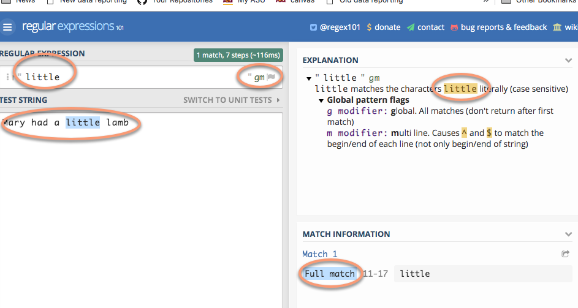
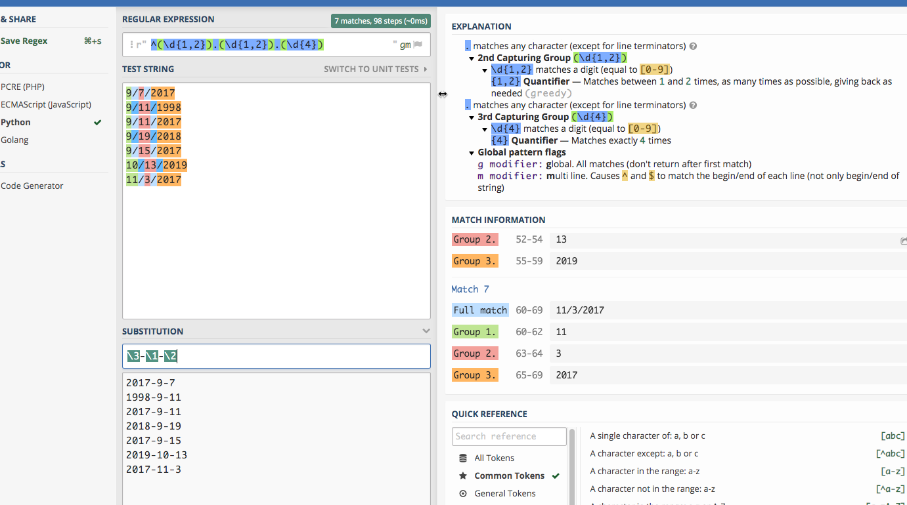

Regular Expressions basics
Regular expressions are used to find and replace text based on patterns rather than characters. They’re particularly useful when trying to pull apart and standardize variables in a database such as names, phone numbers and addresses to make grouping and joining more effective.
A human can easily discern that the name John W. Smith, Jr. and Smith, John W Jr are probably the same. A computer sees them as completely different – they don’t start with the same characters, they have commas in different places, etc. A regular expression can help you pull apart names based on their pieces and then put them back together in another form.
There are up to three parts to a regular expression:
- The pattern you are trying to find.
- Options that control whether the pattern should be case-sensitive and how it handles line endings and wild cards. I usually turn off case-sensitivity but leave the other options alone.
- An optional replacement, which could use part of what you’ve found in the original seeking phase.
In practice, you’ll usually save the pieces of each pattern you’ve found into a variable, then put them back together differently.
Justin Meyer had a good handout at a recent IRE conference that can serve as a guide.
If you’re using R, you can use a regex using the stringr package (part of the tidyverse) using the functions str_detect , str_extract and their cousins. They look like this:
str_detect(var_name, regex("pattern"))
- Regular Expressions basics
- Sample data
- A simple example
- Practice #1: Extract date parts
- Practice #2: Extract pieces of phone numbers
- Practice #3: Extract address pieces
- On your own
Pattern basics
While each language implements regular expressions (or “regex”) a little differently, they are generally the same. You may need to look up how to reference these pieces in your language.
Literal strings
These are just letters, like “abc” or “Mary”. They are case-sensitive and no different than using text in a filter.
You can tell the regex that you want to find your pattern at the beginning or end of a line:
^ = "Find only at the beginning of a line"
$ = "Find only at the end of a line"
Wild cards
A wild card is a character you use to indicate the word “anything”. Here are some ways to use wild cards in regex:
. = "any single character of any type"
.? = "a possible single character of any type (but it might not exist)"
.* = "anything or nothing of any length"
.+ = "anything one or more times"
.{1,3} = "anything running between 1 and 3 characters long"
Regular expressions also have wild cards of specific types. Usually, they are commonly used like this:
\d = "Any digit"
\w = "Any word character"
\s = "Any whitespace (tab, space, etc.)"
\b = "Any word boundary" (period, comma, space, etc.)
When you upper-case them, it’s the opposite:
\D = "Anything but a digit"
Character classes
Sometimes you want to tell the regex what characters it is allowed to accept. For example, say you don’t know whether there is an alternative spelling for a name – you can tell the regex to either ignore a character, or take one of several.
In R, we saw that there were alternative spellings for words like “summarize” – the British and the American spellings. You could, for example, use this pattern to pick up either spelling:
summari[sz]e
The bracket tells the regex that it’s allowed to take either one of those characters. You can also use ranges:
[a-zA-Z0-9]
means that any lower case, upper case or numeric character is allowed.
Escaping
Because they’re already being used for special purposes, some characters have to be “escaped” before you can search for them. Notably, they are parentheses (), periods, backslashes, dollar signs, question marks, dashes and carets.
This means that to find a period or question mark, you have to use the pattern
\. or
\?
In the Regex101, this is the biggest difference among the flavors of regex – Python generally requires the least amount of escaping.
Sample data
Here are three small text files that you can copy and paste from your browser into the regex101.com site. It’s a site that lets you test out regular expressions, while explaining to you what’s happening with them.
- A list of phone numbers in different formats
- A list of dates that you need to convert into a different form.
- A list of addresses that are in multiple lines, and you need to pull out the pieces. (Courtesy of IRE)
- A small chunk of the H2B visa applications from Arizona companies or worksites that has been kind of messed up for this demonstration, in tab-delimited format.
A simple example
You should try following along in regex 101 for this part.
Looking for specific words or characters
The easiest regex is one that has just the characters you’re looking for when you know that they are the right case. They’re called literals because you are literally looking for those letters or characters.

If you weren’t sure if it was upper or lower case, you could change the global pattern flags (to the right of the pattern) from “gm” to “gmi”, which includes the instruction to IGNORECASE.
Practice #1: Extract date parts
(In Regex 101, change the “Flavor” to “Python” – otherwise, you have to escape more of the characters.)
We want to turn dates that look like this:
1/24/2018
into something that looks like this:
2008-1-24
Copy and paste these numbers into the regex 101 window:
9/7/2017
9/11/1998
9/11/2017
9/19/2018
9/15/2017
10/13/2019
11/3/2017
First, you can use any digit using the pattern “\d”. Try to do it in pieces. First, see if you can find one or two digits at the beginning of the line.
^\d{1,2}
Try coming up with the rest of it on your own before you type in the answer:
^\d{1,2}.\d{1,2}.\d{4}
(This works because regular expressions normally are “greedy”. That is, if you tell it “one or two digits”, it will always take two if they exist.)
Put parentheses around any pieces that you want to use for later:

Now each piece has its section, numbered 0 for the whole match, and then 1-3 for the pieces.

Practice #2: Extract pieces of phone numbers
Here are some phone numbers in different formats:
623-374-1167
760.352.5212
831-676-3833
(831)-676-3833
623-374-1167 ext 203
831-775-0370
(602)-955-0222 x20
928-627-8080
831-784-1453
This is a little more complicated than it looks, so try piecing together what this one says:
(\d{3})[-.\)]+(\d{3})[-.]+(\d{4})
(This won’t work in the “substitute” area – it would be easier to create a new variable with the results than to replace the originals.)
Anything within parentheses will be “captured” in a block.
Practice #3: Extract address pieces
(This comes from “Regular expressions for the rest of us”, from Christian McDonald of University of Texas, from the 2019 NICAR conference. This exercise is a great primer on regular expression.)
Here are a few lines of the data, which you can copy and paste to go through McDonald’s exercise. (He uses the Javascript version of regular expressions, but for our purposes in this exercise, it doesn’t matter which one you use. If you choose Python, you’ll have one extra step, of putting a slash (\) before the quotes. The colors work a little better if you leave it on the default PHP method.)
"10111 N LAMAR BLVD
AUSTIN, TX 78753
(30.370945933000485, -97.6925542359997)"
"3636 N FM 620 RD
AUSTIN, TX 78734
(30.377873241000486, -97.9523496219997)"
"9919 SERVICE AVE
AUSTIN, TX 78743
(30.205028616000448, -97.6625588019997)"
"10601 N LAMAR BLVD
AUSTIN, TX 78753
(30.37476574700048, -97.6903937089997)"
"801 E WILLIAM CANNON DR Unit 205
AUSTIN, TX 78745
(30.190914575000477, -97.77193838799968)"
"4408 LONG CHAMP DR
AUSTIN, TX 78746
(30.340981111000474, -97.7983147919997)"
"625 W BEN WHITE BLVD EB
AUSTIN, TX 78745
(30.206884239000487, -97.7956469989997)"
"3914 N LAMAR BLVD
AUSTIN, TX 78756
(30.307477098000447, -97.74169675199965)"
"15201 FALCON HEAD BLVD
BEE CAVE, TX 78738
(30.32068282700044, -97.96890311999965)"
"11905 FM 2244 RD Unit 100
BEE CAVE, TX 78738
(30.308363203000454, -97.92393357799966)"
"3801 JUNIPER TRCE
BEE CAVE, TX 78738
(30.308247975000484, -97.93511531999968)"
"12800 GALLERIA CIR Unit 101
BEE CAVE, TX 78738
(30.307996778000472, -97.94065088199966)"
"12400 W SH 71 Unit 510
BEE CAVE, TX 78733
(30.330682136000462, -97.86979886299969)"
"716 W 6TH ST
AUSTIN, TX 78701
(30.27019732500048, -97.75036306299967)"
"3003 BEE CAVES RD
ROLLINGWOOD, TX 78746
(30.271592738000436, -97.79583786499967)"
On your own
This is a small list of H2A visa applications, which are requests for agricultural and seasonal workers, from companies or worksites in Arizona. Try importing it into Excel, then copying some of the cells to practice your regular expression skills.
You might try:
- Finding all of the LLC’s in the list (limited liability companies) of names. (You should turn on the case-insensitive flag in Regex 101 or set that flag in your program if you do.)
- See how far you can get in standardizing the addresses.
- Split the city, state and zip code of the worksite.
- Find all of the jobs related to field crops such as lettuce or celery.